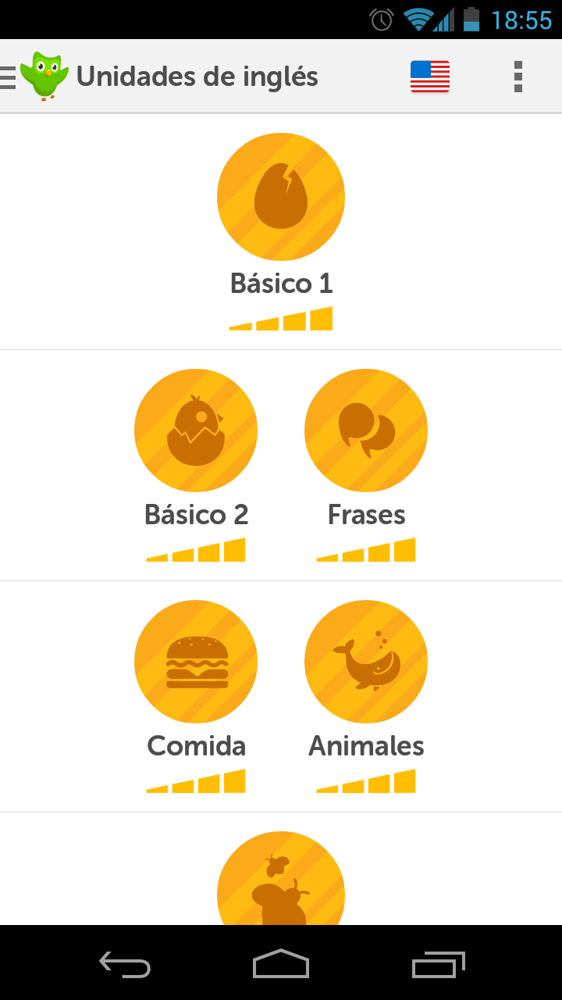

Duolingo és una plataforma d'aprenentatge virtual d'idiomes i traducció.
Té més de 12,5 milions d'usuaris a tot el món.
D'una manera molt fàcil i estructurada, la pàgina web i la aplicació per a mòbils ens permet aprendre diferents idiomes molt fàcilment. En menys de dos minuts ens ofereix la possibilitat d'aprendre un idioma de manera completament correcta, a través de diferents temàtiques, repetint i escoltant moltes vegades el mateix. Segons els organitzadors de la pàgina web i la app, amb unes 100 hores d'utilització ja estariem adquirint un nivell intermig en l'idioma desitjat.
A través de les seves leccions d'idiomes, l'aplicació ofereix la possibilitat de traduir els textos d'Internet a tots aquells usuaris que desitgin fer-ho, comparant després les respostes i escollint la que més puntuació hagi obtingut.
D'aquesta manera els creadors de Duolingo, s'estàn plantejant completar i traduir la Wikipedia a diferents idiomes.
Duolingo et permet la possibilitat d'insertar un text que no sàpigues com traduir a la seva aplicació permetent que els altres usuaris que et vulguin ajudar traduir-lo i així guanyar punts. D'aquesta manera els seus creadors aposten per una traducció individualitzada, deixant de banda als traductors automàtics i les seves equivocacions.

Aquesta aplicació ens permet aprendre idiomes de forma molt ràpida i divertida ja que té molts audios, imatges i algun vídeo mentre traduïm alguns textos d'Internet que pot ser després llegirem i no sabem ni que l'hem traduït nosaltres.